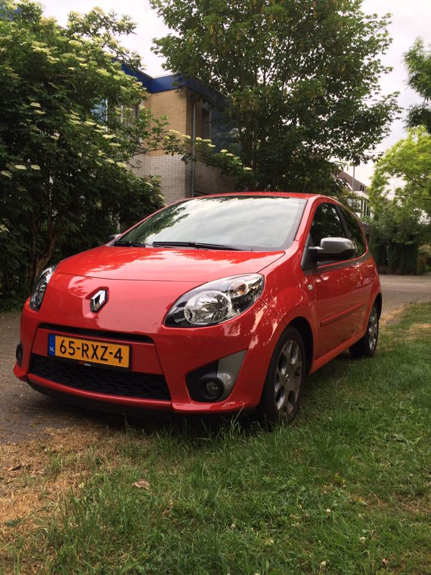
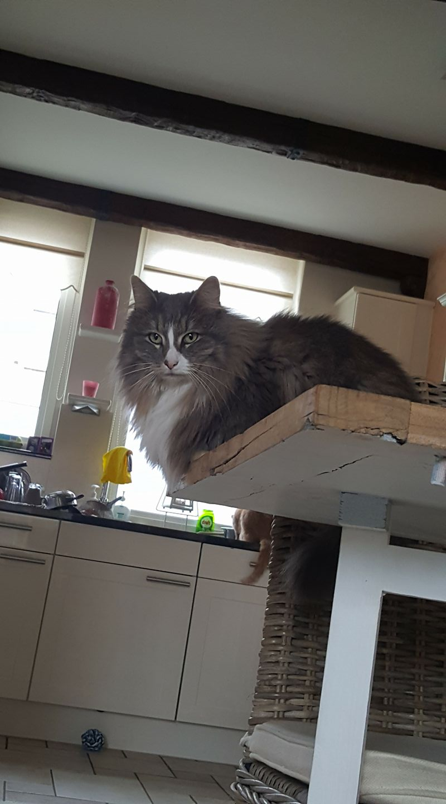

Mijn hobby's zijn natuurlijk computeren.
Verder sport ik ook graag waaronder hardlopen en trainen met gewichten.
rond Racen in mijn auto:"the red bandit" is ook een Hobby.

En wat ik het allerliefste doe is chilling met mijn kat:agapi moe(grieks voor Het schatje)
